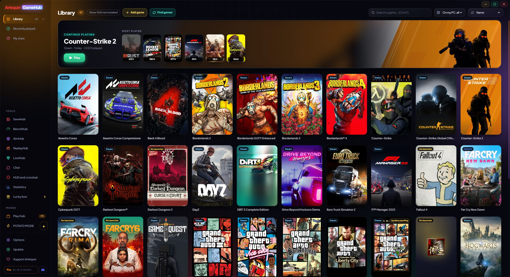

ArlequinGameHub
Launcher wszystkich twoich launcherów: wszystkie twoje gry w jednym miejscu, twoje zapisy zawsze bezpieczne i wszystko, czego potrzebujesz podczas grania.
Windows 10 i 11 (64-bitowy) · Aktualizuje się sam · Wszystkie wersje
Wersja z tej strony dostaje nowe funkcje i ulepszenia jako pierwsza: wersja z Microsoft Store może otrzymać je nieco później.
Linux (AppImage, 64-bitowy) · Wersja testowa, sprawdzona tylko na Nobara: na innych dystrybucjach może nie działać i jeszcze nie aktualizuje się sama

Jeden program, wszystko, w co grasz
Cała twoja biblioteka
Gry ze wszystkich twoich sklepów razem, zainstalowane lub nie, z okładkami i twoimi godzinami gry.
Dowiedz się więcej →SaveHub w zestawie
Sam tworzy kopie twoich zapisów, gdy zamykasz każdą grę. Przywróć je jednym kliknięciem albo wyślij do swojej chmury.
Dowiedz się więcej →HUD i celownik
FPS, temperatury i pobór mocy nad twoją grą oraz celownik regulowany co do jednej dziesiątej piksela.
Dowiedz się więcej →Działa na moim PC?
Zobacz, czy każda gra będzie dobrze działać na twoim PC, zmierz swoje prawdziwe FPS i zmień jej ustawienia graficzne.
Dowiedz się więcej →Play Hub
Pełny ekran do grania z kanapy z kontrolerem Xbox, PlayStation lub Switch.
Dowiedz się więcej →Wbudowany czat
Discord, Steam Chat i TeamSpeak obok twoich gier, bez otwierania kolejnych okien.
Dowiedz się więcej →BenchHub: jak szybki naprawdę jest twój komputer
Testy procesora, RAM i grafiki oraz Hall of Fame, w którym porównasz się ze społecznością.
Dowiedz się więcej →AimHub: rozgrzej celowanie
Pokój 3D do rozgrzewki przed grą i testowania celownika, z twoją własną czułością.
Dowiedz się więcej →ReplayHub: zapisz to, co właśnie zagrałeś
Naciśnij klawisz, a ostatni fragment twojej gry zostanie zapisany jako wideo, jak w ShadowPlay.
Dowiedz się więcej →LootHub: darmowe gry na zawsze
Gry, które sklepy rozdają przez ograniczony czas, wszystkie w jednym miejscu, z powiadomieniem, gdy pojawi się nowa.
Dowiedz się więcej →DiskHub
Ile miejsca zajmuje każda gra na twoich dyskach i co zostaje.
Dowiedz się więcej →ShopHub: sklepy, a obok twój PC
W becie Steam, GOG i Epic w jednym miejscu, a obok twój PC.
Dowiedz się więcej →SocialHub: twoje kanały, bez konta
W becie Twoje kanały Twitch, YouTube i Kick w GameHub, bez potrzeby zakładania konta.
Dowiedz się więcej →Tworzony ze społecznością
Własna baza zapisów i FPS oraz statystyki sprzętu od osób, które grają.
Dowiedz się więcej →POTATO MODE
Ultralekka wersja natywna, bez przeglądarki w środku, dla PC-tów z małą ilością zasobów.
Dowiedz się więcej →Sam znajduje twoje gry
GameHub nigdy nie prosi o hasło do żadnego sklepu: odczytuje to, co już masz na swoim PC, i otwiera każdą grę jej własnym launcherem.
Czego nie da ci zwykły launcher
Są bardzo dobre launchery, które łączą twoje gry. GameHub idzie o krok dalej: oprócz tego, że ma wszystko w jednym miejscu, dba o twoje zapisy i mówi ci, jak każda gra działa na twoim PC.
| Launcher sklepu | Launchery łączące sklepy | Arlequin GameHub | |
|---|---|---|---|
| Gry ze wszystkich twoich sklepów razem | Tylko własne | Tak | Tak |
| Kopia twoich zapisów przy zamknięciu każdej gry | Tylko z własną chmurą | Z wtyczkami | Tak, wbudowane |
| Zapisy we własnej chmurze (Drive, OneDrive, Dropbox) | Nie | Zwykle nie | Tak |
| Działa na moim PC? z wymaganiami każdej gry | W sklepie | Zwykle nie | Tak, w twojej bibliotece |
| Mierz swoje FPS i zobacz, co cię ogranicza (GPU czy CPU) | Nie | Nie | Tak |
| HUD i celownik nad grą | Nie | Zwykle nie | Tak |
| Zapisz to, co właśnie zagrałeś, jako wideo, jednym klawiszem | Nie | Zwykle nie | Tak |
| Gry rozdawane przez sklepy, z alertami o nowych | Nie | Zwykle nie | Tak |
| Porównuj ceny z innymi sklepami i sprawdź, czy gra działa na twoim PC, zanim ją kupisz | Nie | Zwykle nie | W becie Tak |
| Transmisje na żywo i filmy z twoich kanałów Twitch, YouTube i Kick, bez konta | Nie | Nie | W becie Tak |
| Ile każda gra zajmuje na twoich dyskach i pozostałości po odinstalowanych grach | Tylko własne gry | Zwykle nie | Tak |
| Benchmark twojego PC, ze społecznościowym Hall of Fame | Nie | Nie | Tak |
| Rozgrzej celność przed grą, z własną czułością | Nie | Nie | Tak |
| Tryb kanapowy z kontrolerem | Niektóre | Niektóre | Tak, Play Hub |
| Zmieniaj ustawienia graficzne każdej gry z zewnątrz | Nie | Nie | W wielu grach |
| Discord, Steam Chat i TeamSpeak w środku | Własny czat | Zwykle nie | Tak |
| Ultralekki tryb dla słabych PC-tów | Nie | Zwykle nie | POTATO MODE |
| Prosi o hasła do twoich sklepów | — | Czasami | Nigdy |
Co dobre i czego jeszcze brakuje
- ✓Za darmo i bez reklam. To, co ważne, nigdy nie jest płatne.
- ✓Twoje zapisy bezpieczne bez myślenia o tym. Kopia za każdym razem, gdy zamykasz grę, z ochroną na wypadek uszkodzonego zapisu.
- ✓Lekki. A jeśli twojemu PC brakuje zasobów, POTATO MODE to natywne okno bez przeglądarki w środku.
- ✓Twoje dane, twój wybór. Wszystko, co jest udostępniane, jest anonimowe i możesz to wyłączać metryka po metryce.
- ✓Aktualizuje się sam i każda wersja staje się lepsza dzięki temu, co wnoszą gracze.
- !To młody program. Jeśli znajdziesz błąd, daj nam znać.
- !Nie jest jeszcze podpisany. Windows ostrzega za pierwszym razem: „Więcej informacji → Uruchom mimo to”.
- !Linux, w testach. Jest wersja testowa, sprawdzona tylko na Nobara i jeszcze niemająca automatycznych aktualizacji; Steam Deck nie był jeszcze testowany.
- !Baza dopiero się rozkręca. W przypadku mniej znanych gier za pierwszym razem możesz musieć ręcznie wskazać folder zapisów (albo GameHub nauczy się go, gdy grasz).
- !Szacunki FPS potrzebują graczy. Dopóki dla gry jest mało danych, jej FPS są wyliczane z wymagań na Steamie i są przybliżone.
Chcesz spróbować?
⬇ Pobierz bezpośrednio 🛍️ Pobierz ze sklepu Microsoft StoreWindows 10 i 11 (64-bit) · Za darmo · Aktualizuje się sam
Linux (AppImage, 64-bitowy) · Wersja testowa, sprawdzona tylko na Nobara: na innych dystrybucjach może nie działać i jeszcze nie aktualizuje się sama